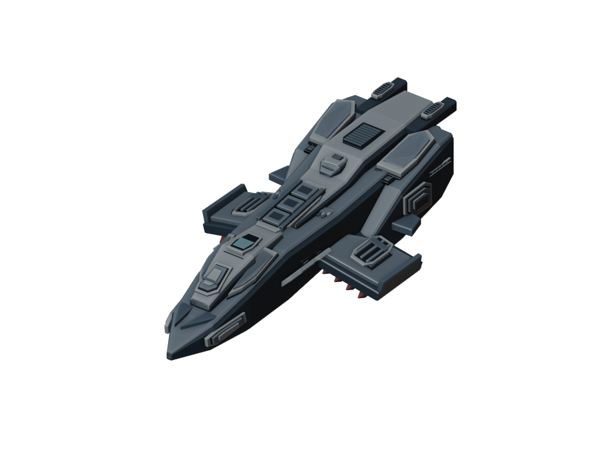
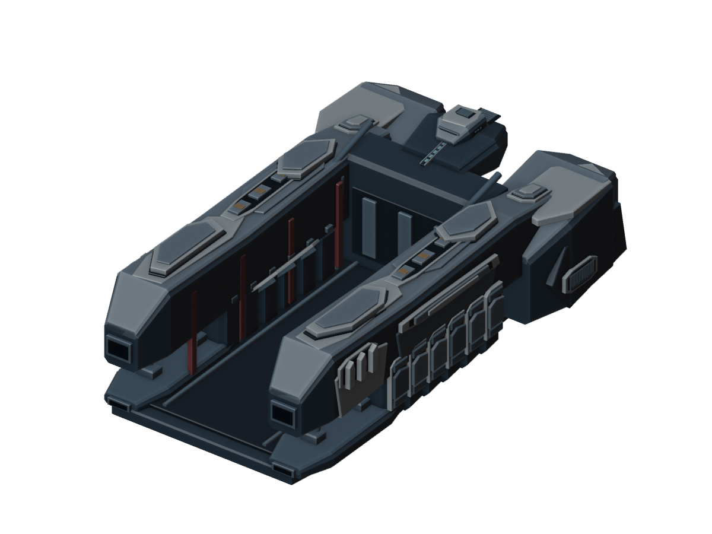
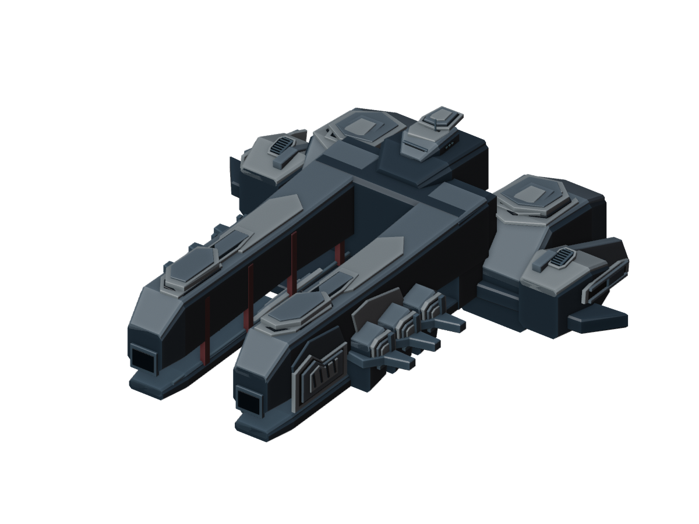
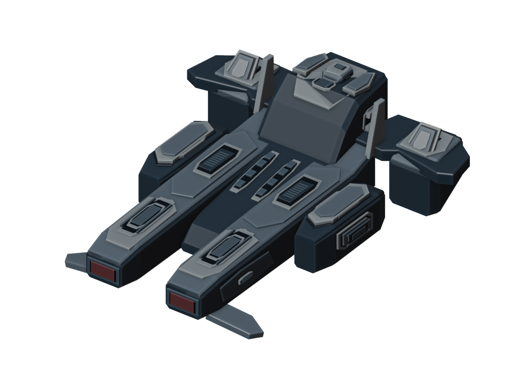
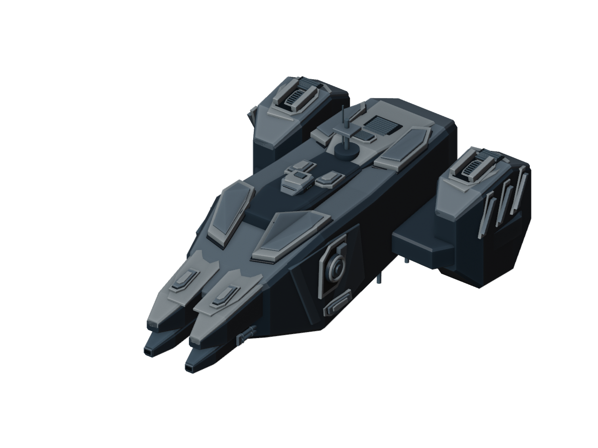
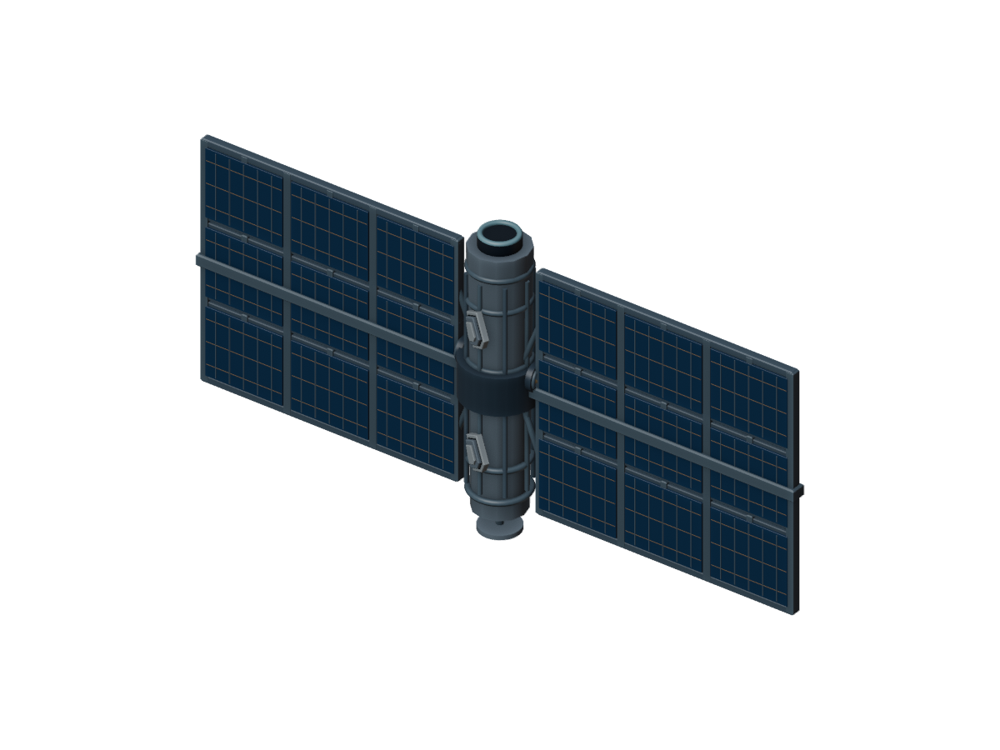
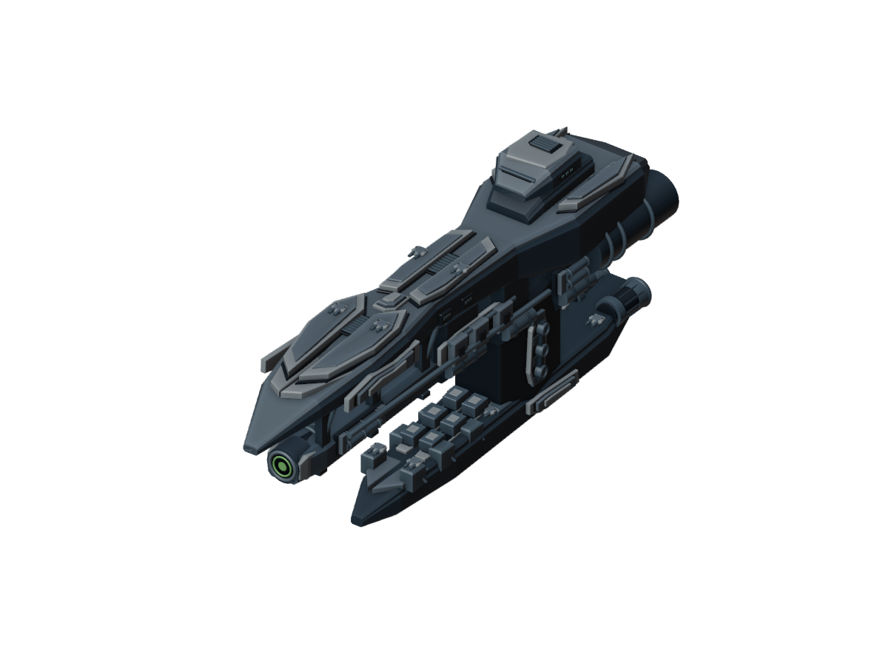
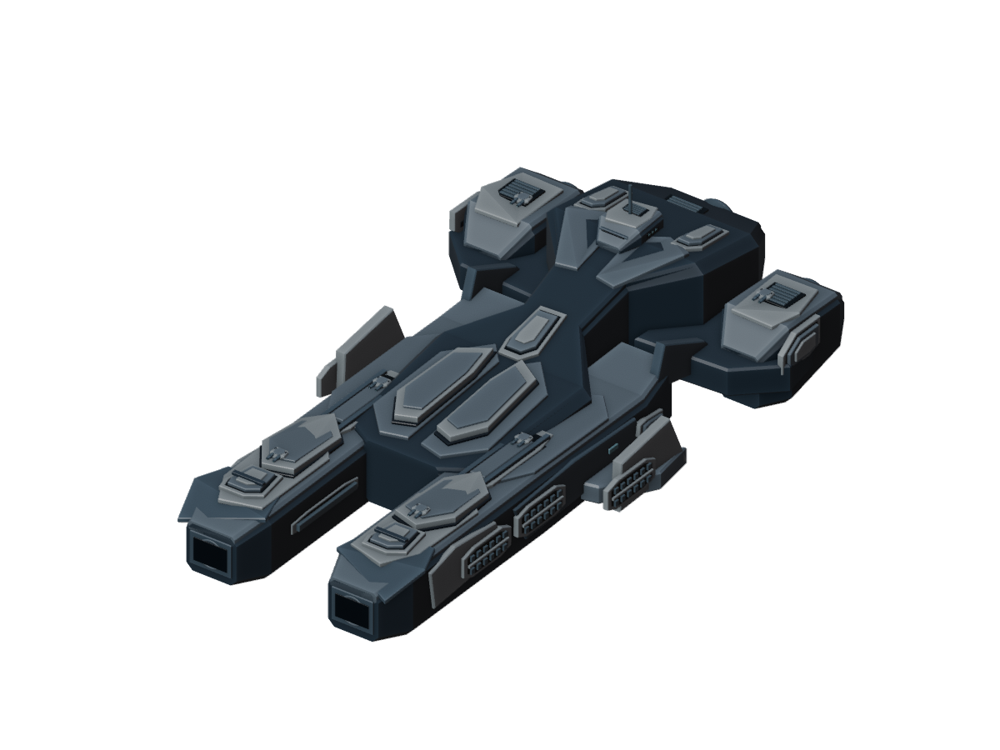
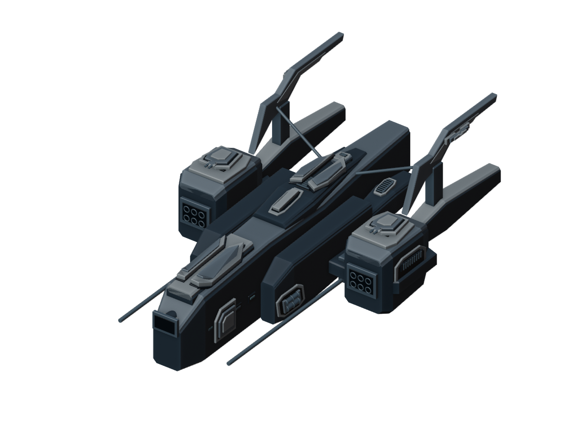

对照原三维模型补充各舰特有结构：运输货舱、六角夹持机构、回收绞盘、舰腹机械与分层装甲。以无畏舰的细节层级和画风为基准，所有部件有实体连接。守护者与死星本轮暂缓。探测器、战列舰、收割者、湮灭之星，以及轻战、巡洋舰、重战、无畏舰、驱逐舰与深空吞噬者保持本轮修改前的最新版。
点击舰船进入可旋转的模型页面。三视图相似度待验收；缺少三视图的舰船明确标记补建来源。

Bomber · 找回的三视图

Cargo_Ship · 找回的三视图

Large_Cargo_Ship · 找回的三视图

Colony_Ship · 找回的三视图

Recycler · 找回的三视图

Solar_Satellite · APK 原图 / 隐藏面补建

Interceptor · 找回的三视图

Devourer_Interceptor · 找回的三视图

Titanenergetic_Frigate · 找回的三视图